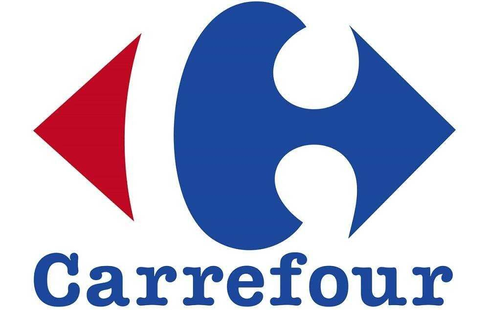

LadyBug Dev
Próxima oportunidade
Atualmente estou correndo atrás do meu primeiro trabalho como desenvolvedora. Sinto que chegou a hora de arriscar e colocar o pouco conhecimento que já tenho em prova.
Acredito que um trabalho na área agora só agregaria para meu desenvolvimento, tendo em vista de que me forçaria de certa forma a buscar mais conhecimento e formas de resolver problemas.
Carrefour

Meu segundo trabalho formal, atualmente estou trabalhando aqui
Sou uma jovem aprendiz, sendo assim eu faço um pouco de tudo, de organizar produtos a alarmar e atender os clientes dentro da loja.
Cead Mathisa
Meu primeiro emprego formal, uma escola para jovens e adultos que não tiveram a oportunidade de concluir sua escolaridade.
Eu costumava trabalhar atendendo pessoas, fazendo matriculas, gerenciando planilhas de notas e financeiras.
Atualmente por conta da pandemia a escola me solicitou ajuda para edição dos vídeos de aulas que são gravadas e enviadas porteriormente para os alunos.